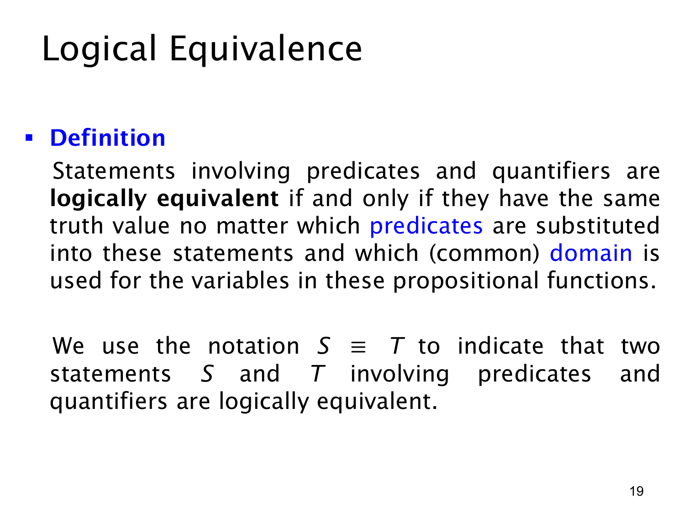

L1.2 · 第 19 页讲解原文
查看这一页课件

含量词公式的逻辑等价
这页把“逻辑等价”从命题逻辑推广到谓词与量词。两个含量词的陈述 S、T 若无论选用什么谓词解释、什么共同论域，真值都相同，就称它们逻辑等价，记作
S≡T.
“共同论域”很重要：比较左右两式时，要让它们谈论同一批可能对象；否则真值不同可能只来自范围变了，而不是逻辑结构不同。例如前面受限论域的等价改写，左右形式看似量化范围不同，但通过 Q(x) 把小论域在大论域内准确表示出来，才保证语义相同。
定义中的“无论什么谓词”也比“在某个具体例子中两句都真”强得多。假设 P(x) 表示“x 是偶数”，某两式在某个论域中碰巧都为真，不能由此断言它们逻辑等价；换一个论域或改换谓词后可能不再同真。证明等价需要一个适用于所有允许解释的推理，或者把结构化简成相同条件。
一个简单例子是对同一论域，¬∀xP(x) 与 ∃x¬P(x)：前者说“不是每个对象都满足 P”，后者说“至少有一个对象不满足 P”，不论 P 具体代表什么，真值都一致。后续页面会系统讨论这类量词等价规律。